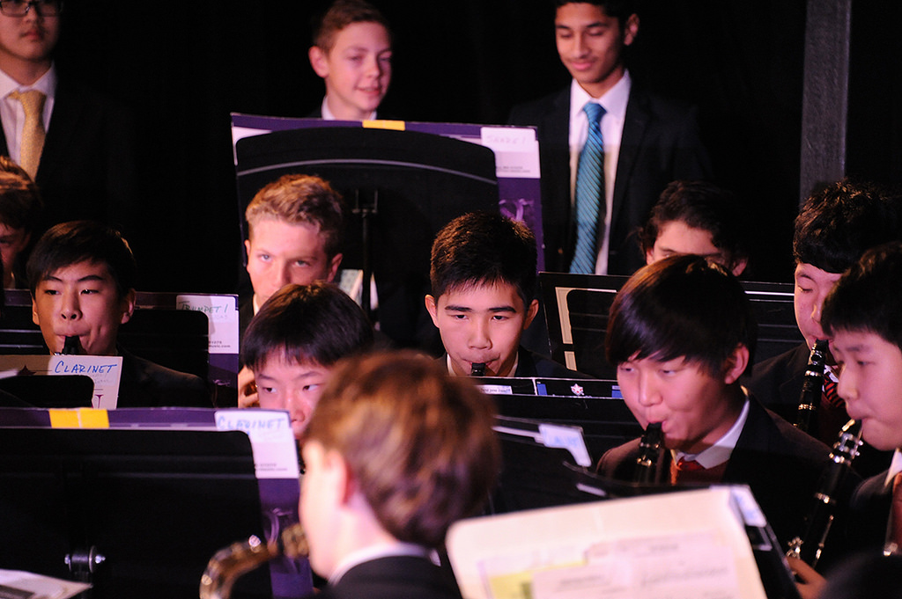

Music in Schools
Having music from a young age made me passionate about music. I have been involved in school music programs since 4th grade. In middle school, participation in the music program was mandatory and it was there, surrounded by all of my peers that I developed my passion for music. In high school the band program just barely scratches by, and so I've become passionate about the importance for advocacy to keeep music in schools.
Why is it important to have music in schools?
Music is important because it works all parts of the brain. Students with music programs in their schools perform better on testing. Music promotes creativity and critical thinking.

How can schools provide quality music programs?
Schools can provide quality music programs by taking initiative to encourage their students to participate. Having a mandatory band program exposes students to music early and cultivates their interest. Finding grants can help fund music purchases and instrument purchases. Hiring multiple music teachers ensures quality. Allowing students to have time to rehearse in school without instructions is extremely important.